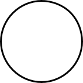
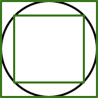
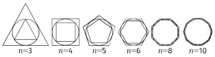
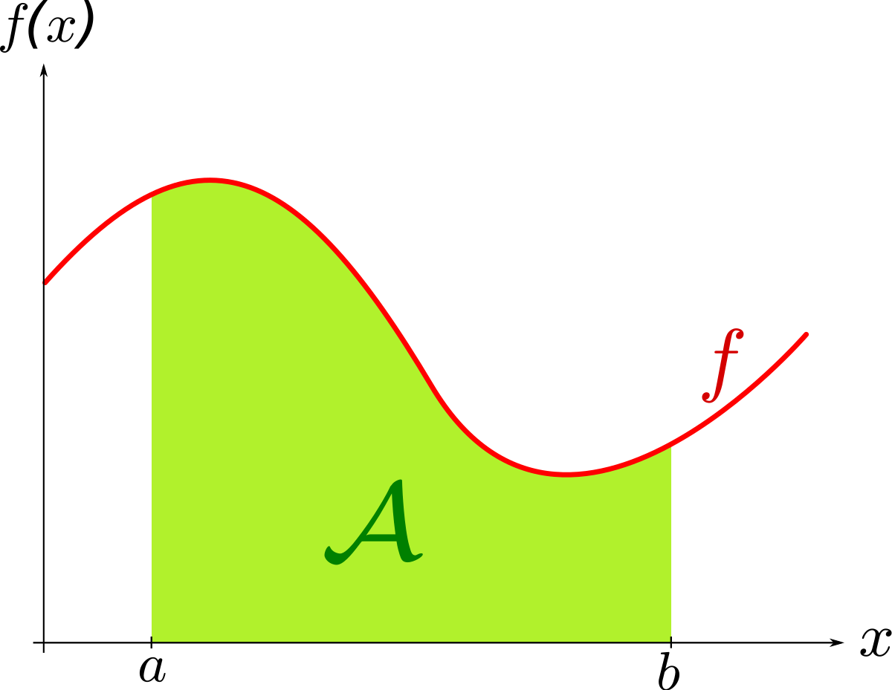

L’objectif ici est d’établir de jolies formules faisant intervenir $\phi$, $\pi$ et $e$, trois constantes fondamentales des mathématiques. Nous n’avons ici l’ambition ni d’être exhaustifs, ni même de suivre une quelconque structure. Les résultats sont présentés pour leur intérêt esthétique et pédagogique.
$\pi$, $\phi$, et $e$ se distinguent principalement des constantes généralement étudiées par leur irrationalité. Aucune d’entre elles ne peut être écrite sous forme d’une fraction de deux entiers. Il en résulte un développement décimal infini sans logique apparente.
$\pi$ et $e$ présentent par ailleurs la particularité d’être des nombres transcendants, c'est-à-dire qu’il ne sont la racine d’aucun polynôme à coefficients entiers.
Malgré cet apparent “chaos”, elles présentent de jolies propriétés qui justifient leur étude.
Le nombre $\phi$, aussi appelé nombre d'or, est une constante dont l'expression décimale commence par $1,618$. $\phi$ est définit comme l'unique rapport $a/b$ entre deux longueurs $a$ et $b$ telles que le rapport de la somme $a + b$ des deux longueurs sur la plus grande ($a$) soit égal à celui de la plus grande ($a$) sur la plus petite ($b$), ce qui s'écrit :
$$ \frac{a+b}{a} = \frac{a}{b} = \phi $$
Ainsi, le nombre d'or est l'unique nombre réel positif tel que
$$ \phi^2 = \phi + 1$$
La notation $\phi$ fait référence au sculpteur Phidias, concepteur du parténon.
Partant de l'équation caractéristique du nombre d'or
$$\phi^2 = \phi + 1$$
En réarrangeant les termes nous obtenons
$$\phi^2 - \phi - 1 = 0$$
Il s’agit là d’une équation polynomiale du second degré des plus classiques.
Nous calculons $\Delta = (-1)^2 - 4 \times (-1) = 5$
D’où
$$ x_1 = \frac{1 + \sqrt{5}}{2} $$
$$ x_2 = \frac{1 - \sqrt{5}}{2} $$
Étant donné que seul $x_1$ est positif, nous obtenons
$$\phi = \frac{1 + \sqrt{5}}{2} $$
Une manère très courante de représenter le nombre d'or.
Mais $\phi$ apparait également et de manière plus surprenante dans l'évaluation d'expression au caractère "infini".
$\phi$ est par exemple égal à
$$\sqrt{ 1 + \sqrt{1 + \sqrt{1 + ...}}}$$
Démonstration
Ce résultat, d'apparence complexe, est en réalité tout à fait trivial.
Notons $x = \sqrt{ 1 + \sqrt{1 + \sqrt{1 + \ldots } } }$
Étant donné que le motif se répète indéfiniment, nous avons en particulier
$$x = \sqrt{ 1 + x }$$
d’où
$$ x^2 = 1 + x $$
qui correspond à l’équation caractéristique du nombre d’or.
Ainsi $$x = \sqrt{ 1 + \sqrt{1 + \sqrt{1 + \ldots } } } = \phi$$
Une autre propriété remarquable du nombre d’or concerne son lien étroit avec la suite de Fibonacci.
Considérons la suite $(F_n)$ telle que $F_0 = 1$, $F_1 = 1$ et $F_{n+2} = F_{n+1} + F_{n}$, autrement dit la suite dont les deux premiers termes sont égaux à 1 et dont chaque terme suivant est la somme des deux termes qui le précèdent. En voici les premiers termes
1, 1, 2, 3, 5, 8, 13, 21, 34, 55, 89, 144, 233, 377, 610, ...
C’est la suite de Fibonnaci.
Considérons alors $R_n = \frac{F_{n+1}}{F_{n}}$, le quotient des termes consécutifs de la suite au rang $n$. Cette suite $R_n$ possède une limite, laquelle est le nombre d’or, ce qui peut s'exprimer mathématiquement comme
$$\lim_{n \to +\infty} R_n = \lim_{n \to +\infty} \frac{F_{n+1}}{F_{n}} = \phi$$
Démonstration
Rappelons dans un premier temps quelques éléments au sujet de la valeur absolue.
La valeur absolue d’un nombre correspond à sa valeur numérique sans tenir compte du signe.
Elle est notée $|x|$.
Par exemple $$|-3| = 3$$ $$|3| = 3$$
D’un point de vue géométrique, la valeur absolue correspond à la distance séparant un nombre de l’origine du repère.
Une propriété essentielle de la valeur absolue est la suivante. Puisque $(a-b) = -(b-a)$, nous avons $|a-b| = |b-a|$.
Notons dans un premier temps que.
$$\phi^2 = \phi + 1$$ $$ \Leftrightarrow \phi = 1 + \frac{1}{\phi} $$
Par ailleurs, et d’après la définition de la suite de Fibonacci
$$ R_n = \frac{F_{n+1}}{F_n} = \frac{F_n + F_{n-1}}{F_n} = \frac{F_n}{F_n} + \frac{F_{n-1}}{F_n} = 1 + \frac{F_{n-1}}{F_n}$$
Or
$$ R_{n-1} = \frac{F_n}{F_{n-1}} $$
D'où
$$ \frac{1}{R_{n-1}} = \frac{F_{n-1}}{F_{n}}$$
Et ainsi
$$ R_n = 1 + \frac{F_{n-1}}{F_n} = 1 + \frac{1}{R_{n-1}} $$
Nous pouvons alors en déduire que
$$ \left| R_n - \phi \right| $$
$$ = \left| \left( 1 + \frac{1}{R_{n-1}} \right) - \left( 1 + \frac{1}{\phi} \right) \right|$$
$$ = \left| \frac{1}{R_{n-1}} - \frac{1}{\phi} \right| $$
$$ = \left| \frac{\phi - R_{n-1}}{\phi R_{n-1}} \right| $$
Mais puisque $\phi$ est strictement positif, il en est de même de $\frac{1}{\phi}$ et il est alors possible de le sortir de la valeur absolue
$$ = \frac{1}{\phi} \left| \frac{\phi - R_{n-1}}{R_{n-1}} \right|$$
Par ailleurs, $R_{n-1}$ étant plus grand que 1 (quotient de deux termes consécutifs d’une suite croissante), nous avons l’inégalité suivante
$$ = \frac{1}{\phi} \left| \frac{\phi - R_{n-1}}{R_{n-1}} \right| $$
$$ \leq \frac{1}{\phi} \left| \phi - R_{n-1} \right| $$
Que nous pouvons réécrire
$$ = \frac{1}{\phi} \left| \frac{\phi - R_{n-1}}{R_{n-1}} \right| $$
$$ \leq \frac{1}{\phi} \left| R_{n-1} - \phi \right| $$
Nous obtenons en fin de compte
$$ \left| R_n - \phi \right| \leq \frac{1}{\phi} \left| R_{n-1} - \phi \right| $$
Mais nous pouvons ici remarquer que le terme $|R_{n-1} - \phi|$ correspond précisément au terme $\left| R_n - \phi \right|$ en $n - 1$
Il est alors possible de répéter le processus de la façon suivante
$$ \left| R_n - \phi \right| $$
$$\leq \frac{1}{\phi} \left| R_{n-1} - \phi \right| $$
$$ \leq \left(\frac{1}{\phi}\right)^2 \left| R_{n-2} - \phi \right| \leq $$
$$\ldots$$
$$ \leq \left(\frac{1}{\phi}\right)^{n-1} \left| R_{1} - \phi \right| $$
Or puisque $0 < 1/\phi < 1$
$$\lim_{n\to+\infty} \left(\frac{1}{\phi}\right)^{n-1} = 0$$
Ce qui implique
$$ \lim_{n\to+\infty} \left| R_n - \phi \right| = 0 $$
Autrement dit, $R_n$ est contraint en $+\infty$ à se confondre à $\phi$ d'où en fin de compte
$$ \lim_{n\to+\infty} \frac{F_{n+1}}{F_{n}} = \phi $$
QED. 1
Le nombre $e$, aussi appelé constante de Neper ou nombre exponentiel, est une constante dont l'expression décimale commence par 2,7182. $e$ est définit comme la base du logarithme naturel, c’est à dire le nombre tel que
$$ ln(e) = 1 $$
On doit la notation $e$ au mathématicien suisse Euler. De de nombreuses conjectures existent quand à l'origine de sa notation. $e$ pourrait être un hommage à Euler ou encore $e$ comme première lettre de exponentielle.
$e$ apparait régulièrement dans des expressions infinis particulièrement harmonieuses.
En 1737, Euler a obtenu le développement en fraction continue de e suivant
$$ e = 2 + \frac{1}{1 + \frac{1}{2 + \frac{1}{1 + \frac{1}{ 1 + \frac{1}{4 + \frac{1}{1 + ...} } }} } } $$
Le schéma étant à partir de la deuxième fraction 2, 1, 1, 4, 1, 1, 6, 1, 1, 8, 1, 1 10, ... 2n, 1, 1, 2(n+1), ... à l'infini
De façon similaire, Euler a démontré que
$$ e = 1 + \frac{1}{1} + \frac{1}{1 \times 2} + \frac{1}{1\times2\times3} + \ldots = \sum_{n=0}^{+\infty} \frac{1}{n!} $$
C'est à partir de cette formule que Euler a démontré ce qui est considéré par bon nombre de mathématiciens comme la plus belle formule des mathématiques
$$ e^{i\pi} + 1 = 0$$
Elle met en relation les quatres pilliers des mathématiques que sont l'analyse ($e$), l'algèbre ($i$), la géométrie ($\pi$) et l'arithmétique (0 et 1).
$e$ fait également une apparition remarquable dans le calcul de la limite en $+\infty$ de $(1 + \frac{1}{n})^n$
Si l’on calcule successivement les termes de la suite nous obtenons
n = 1 -> 2.0
n = 2 -> 2.25
n = 3 -> 2.37037037037037
n = 4 -> 2.44140625
n = 5 -> 2.4883199999999994
n = 6 -> 2.5216263717421135
n = 7 -> 2.546499697040712
n = 8 -> 2.565784513950348
n = 9 -> 2.5811747917131984
n = 10 -> 2.5937424601000023
n = 11 -> 2.6041990118975287
n = 12 -> 2.613035290224676
n = 13 -> 2.6206008878857308
n = 14 -> 2.6271515563008685
n = 15 -> 2.6328787177279187
n = 16 -> 2.6379284973666
n = 17 -> 2.64241437518311
n = 18 -> 2.6464258210976865
n = 19 -> 2.650034326640442
n = 20 -> 2.653297705144422
La suite semble converger vers $e$. Il s’agit en réalité d’un théorème que nous pouvons exprimer de la façon suivante
$$ \lim_{n\to+\infty} \left(1 + \frac{1}{n} \right)^n = e $$
Démonstration
Pour démontrer cette égalité il est tout d’abord important de remarquer que nous sommes en présence d’une forme indéterminée ($1^{\infty}$). Nous cherchons donc à lever l’indétermination.
Pour cela, réécrivons dans un premier temps
$$\left(1 + \frac{1}{n} \right)^n$$
en
$$ e^{\ln{\left(1 + \frac{1}{n} \right)^n}}$$
Cette transformation est permise par la propriété suivante
$e^{\ln{x}} = \ln{e^x} = x$
De plus puisque $\ln{a^n} = n\ln{a}$ nous pouvons réécrire l’expression de la façon suivante
$$ e^{n \ln{\left(1 + \frac{1}{n} \right)}}$$
On pose alors $N = \frac{1}{N}$ de sorte que
$$ \lim_{n\to+\infty} \left(1 + \frac{1}{n} \right)^n $$
$$ = \lim_{n\to+\infty} e^{n \ln{\left(1 + \frac{1}{n} \right)}}$$
$$ = \lim_{N\to0} e^{\frac{\ln{(1+N)}}{N}}$$
$\frac{\ln(1+N)}{N}$ est toujours une forme indéterminée. Or puisque $\ln{1} = 0$ nous pouvons écrire
$$ \lim_{N \to 0} \frac{\ln{(1+N)}}{N} $$ $$ = \lim_{N \to 0} \frac{\ln{(1+N)} - \ln{(1)}}{N} $$
Qui correspond alors précisément à l’expression de la dérivée de la fonction $ln(1+x)$ en $x = 0$.
Calculons donc cette dérivée
$$\left[ \ln{(1+x)} \right]' = \frac{1}{1+x} $$
qui vaut $1$ en $x=0$.
Dès lors
$$ \lim_{N\to0} \frac{\ln{(1+N)}}{N} = 1$$
Ainsi
$$ \lim_{n\to+\infty} \left( 1 + \frac{1}{n} \right)^n $$
$$ = \lim_{N\to0} e^{\frac{\ln{(1+N)}}{N}}$$
$$ = e^1$$ $$ = e $$
QED.
$\pi$ est un nombre dont la valeur approchée est 3,1415. Il est défini comme rapport constant de la circonférence d’un cercle à son diamètre.
Depuis le XVIIe siècle, on le représente par la lettre grecque $\pi$, première du mot périmètre. On parle également de "constante d’Archimède".
C’est une constante fondamentale en mathématiques et plus généralement en sciences car, au-delà de la géométrie, elle apparaît dans un très grand nombre de formules.
Une première méthode "naïve" pour calculer $\pi$ est dûe au savant Archimède.
Considérons un cercle de rayon 1.

Nous noterons P le périmètre de ce cercle.
Par définition de $\pi$
$$P = 2 \times \pi \times R $$
Or dans notre cas $R=1$ d'où
$$ P = 2 \times \pi $$ $$ \pi = \frac{P}{2} $$
Ainsi, il suffit de connaître le périmètre de notre cercle pour en déduire $\pi$.
Pour cela, traçons deux carrés A et B sur notre figure, respectivement inscrit et circonscrit.

De ces carrés, il est très simple de déterminer les périmètres $P_A$ et $P_B$.
Ces deux périmètres encadrent le périmètre du cercle, de sorte que
$$P_A \leq P \leq P_B$$
Et puisque $\pi = \frac{P}{2}$, nous obtenons un encadrement de $\pi$
$$ \frac{P_A}{2} \leq \pi \leq \frac{P_B}{2}$$
Pour améliorer la précision de l’encadrement, il est alors possible d’utiliser des polygones à davantage de côtés tels que des pentagones, hexagones etc.

Voir une démonstration interactive.
$\pi$ peut également être approximé de manière plus calculatoire.
Il apparaît par exemple dans le problème de Bâle qui consiste à calculer la valeur de la série
$$\frac{1}{1^2} + \frac{1}{2^2} + \frac{1}{3^2} + \ldots $$ $$ = \sum_{n=1}^{+\infty} \frac{1}{n^2} $$
Autrement dit la somme de l’inverse des carrés.
Leonhard Euler répond à cette question en 1735, établissant que cette série vaut précisément $\frac{\pi^2}{6}$
De fait, il donne la première valeur non-triviale de ce qui sera appelée par la suite la fonction zêta de Riemann, au cœur du plus grand problème des mathématiques modernes.
$\pi$ apparaît également de manière plus surprenant dans certains phénomènes physiques.
Imaginons le problème suivant.
Nous disposons d’une petite aiguille et d’une feuille de papier sur laquelle nous avons tracé des droites à intervalles réguliers.
Supposons que l’aiguille soit de longueur $l$ et que les droites soient séparées d’une distance $d$ ($d \geq l$).
Si l’on décide de lancer l’aiguille sur la feuille, quelle est la probabilité que l’aiguille se place dans une position telle qu’elle coupe l’une des droites ?
Le mathématicien français Georges Louis Lelecrc, Comte de Buffon en a donné la réponse en 1777, établissant que cette probabilité est exactement égale à
$$ p = \frac{2}{\pi} \frac{l}{d} $$
Ce qui donne pour $l = d$
$$ p = \frac{2}{\pi} $$
Ce résultat signifie que l’on peut obtenir des valeurs approchées de $\pi$ par l’expérience.
Implémentée sur ordinateur, cette méthode constitue un excellent exemple d’algorithmes randomisé, utilisant l’aléatoire pour déterminer une valeur précise, en l'occurrence $\pi$.
Voir une démonstration interactive.
Une autre formule, et par ailleurs l’une des premières, faisant intervenir $\pi$ a été découverte par le mathématicien indien Madhava au 14-ème / 15-ème siècle avant d’être redécouverte près de 200 ans plus tard en 1673 par le mathématicien et philosophe allemand Leibniz qui en porte désormais le nom. Elle s’énonce comme suit
$$\frac{\pi}{4} = 1 - \frac{1}{3} + \frac{1}{5} - \frac{1}{7} + \ldots = \sum_{n=0}^{+\infty} \frac{(-1)^n}{2n+1} $$
Autrement dit, $\pi/4$ est égal à la somme des inverses des nombres impaires en faisant alterner les signes.
À noter que cette série converge extrêmement lentement. Pour calculer $\pi$ avec une précision de 6 décimales, il faut près de deux millions d’itérations.
Démonstration
Quelques prérequis sont nécessaires pour pouvoir comprendre cette démonstration.
Notion de primitive
La primitive est en quelque sorte “l’inverse” de la dérivée.
Soit $f$ une fonction, une primitive de $f$ notée $F$ est une fonction telle que $$ F'(x) = f(x) $$
Par exemple, une primitive de $f(x) = x^2$ pourrait être $$ \frac{x^3}{3}$$ car $$ \left[\frac{x^3}{3}\right]' = x^2 $$
Notion d’intégrale
Soit $f$ une fonction.
L’intégrale de $a$ à $b$ de la fonction $f$ correspond à l’aire sous la courbe représentative de $f$ entre $a$ et $b$.

Elle est notée
$$ \int_a^b f(x) dx $$
qui doit être lu “intégrale de $a$ à $b$ de $f(x)$ $dx$”.
Cette intégrale est alors égale, d’après le théorème fondamental de l’analyse, à
$$ F(b) - F(a) $$
où $F$ est une primitive de $f$.
Par exemple, l’aire entre 0 et 1 de la fonction $f(x) = x^2$ est
$$ \int_0^1 x^2 dx = \frac{1^3}{3} - \frac{0^3}{3} = \frac{1}{3} $$
Avant de s’engager dans la démonstration, nous allons démontrer un théorème intermédiaire (un lemme) dont nous aurons besoin par la suite.
Ce lemme annonce que, pour tout $n\in N$ et $t\in R$ nous avons l’égalité suivante
$$ \frac{1}{1 + t^2} = 1 - t^2 + t^4 - \ldots + t^{4n} - \frac{t^{4n+2}}{1 + t^2} $$
Pour démontrer cela, nous allons partir d’une égalité bien connue concernant les suites géométriques.
Soit $(u_n)$ une suite géométrique de premier terme $u_0 = 1$ et de raison $q$.
Nous savons que la somme des n premiers termes de la suite vaut
$$ S = 1 + q + q^2 + \ldots + q^n = \frac{1 - q^{n+1}}{1 - q} $$
De même la somme des $2n$ premiers termes de la suite vaut
$$ S = 1 + q + q^2 + ... + q^{2n} = \frac{1 - q^{2n+1}}{1 - q}$$
Posons alors $q = -t^2$.
Nous avons
$$ 1 + (-t^2) + (-t^2)^2 + (-t^2)^3 + \ldots + (-t^2)^{2n} = \frac{1-(-t^2)^{2n+1}}{1 - (-t^2)} $$
Que nous pouvons simplifier en
$$ 1 - t^2 + t^4 - t^6 + \ldots + t^{4n} = \frac{1 + t^{4n+2} }{1 - t^2} $$
D’où, en décomposant la fraction de droite
$$ 1 - t^2 + t^4 - t^6 + \ldots + t^{4n} = \frac{1}{1-t^2} + \frac{t^{4n+2}}{1-t^2} $$
Et ainsi
$$ \frac{1}{1-t^2} = 1 - t^2 + t^4 - t^6 + \ldots + t^{4n} - \frac{t^{4n+2}}{1-t^2} $$
Ce qu’il fallait démonter.
Attaquons nous maintenant au résultat en lui-même.
Nous avons donc d’après le lemme précédent :
$$ \frac{1}{1-t^2} = 1 - t^2 + t^4 - t^6 + \ldots + t^{4n} - \frac{t^{4n+2}}{1-t^2} $$
Considérons un alors réel $x$ tel que $0 \leq x \leq 1$.
Étant donné que les deux membres sont égaux, il en est de même de leurs intégrales respectives entre $0$ et $x$. De sorte que
$$ \int_0^x \frac{1}{1-t^2} dt = \int_0^x \left( 1 - t^2 + t^4 - t^6 + \ldots + t^{4n} - \frac{t^{4n+2}}{1-t^2} \right) dt $$
$$ = x - \frac{x^3}{3} + \frac{x^5}{5} - \frac{x^7}{7} + \ldots + \frac{x^{4n+1}}{4n+1} - R_n(x) $$
où
$$R_n(x) = \int_0^x \frac{t^{4n+2}}{1+t^2} dt $$
Or puisque $t^2 \geq 0$ nous avons
$$1 \leq 1 + t^2$$
De sorte que
$$0 \leq R_n(x) \leq \int_0^x t^{4n+2} dt$$
d'où
$$0 \leq R_n(x) \leq \frac{x^{4n+3}}{4n+3}$$
Mais puisque $0 \leq x \leq 1$ il est clair que
$$\frac{x^{4n+3}}{4n+3} \leq \frac{1}{4n+3}$$
D'où
$$ \lim_{n\to+\infty} \frac{1}{4n+3} = 0 $$
implique que
$$ \lim_{n\to+\infty} R_n(x) = 0$$
Et nous obtenons ainsi
$$ \int_0^x \frac{1}{1+t^2} dt = x - \frac{x^3}{3} + \frac{x^5}{5} - \frac{x^7}{7} + \ldots $$
Mais puisque la dérivée de $\arctan{(t)}$ est $\frac{1}{1+t^2}$ nous avons par définition d’une primitive
$$ \int_0^x \frac{1}{1 + t^2} dt = \arctan{(x)} - \arctan{(0)} = \arctan{(x)}$$
dès lors
$$ \arctan{(x)} = x - \frac{x^3}{3} + \frac{x^5}{5} - \frac{x^7}{7} + \ldotp $$
Et en prenant $x = 1$ :
$$ \arctan{(1)} = 1 - \frac{1^3}{3} + \frac{1^5}{5} - \frac{1^7}{7} + \ldotp $$
Autrement dit
$$ \frac{\pi}{4} = 1 - \frac{1}{3} + \frac{1}{5} - \frac{1}{7} + \ldots $$
QED.
Voici quelques ressources pour approfondir le sujet.
Chacune d’entre elle est précédée d’un certain nombre d’étoiles suivant sa complexité, allant d’une étoile (*) pour les plus faciles à trois étoiles (***) pour les plus complexes.
(***) La page Wikipédia consacrée à $e$. e (nombre) — Wikipedia
(***) La page Wikipedia consacrée au nombre $\pi$ Pi — Wikipedia
quod erat demonstrandum, l'équivalent en latin de « ce qu'il fallait démontrer » (CQFD) ↩